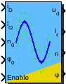
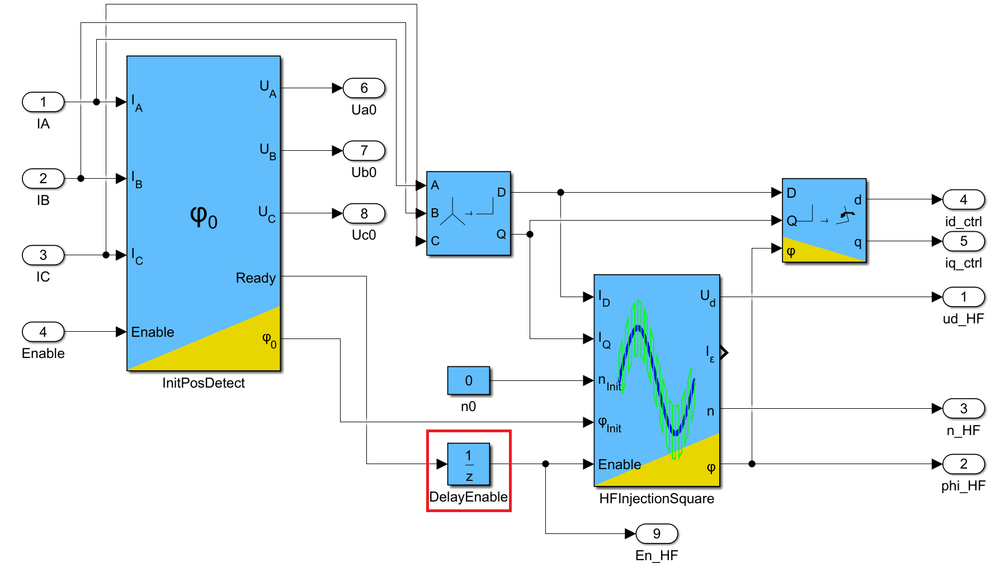

| Inports
| |
| iD | Direct current in fixed coordinate system |
| iQ | Quadrature current in fixed coordinate system |
| n0 | Initial speed preloaded at rising edge of Enable signal |
| phi0 | Initial rotor angle preloaded at rising edge of Enable signal |
| Enable | Enable == 0: Deactivation of this block; Outputs are set to zero Enable 0->1: Preload of angle and speed for internal integrators Enable == 1: Activation of this block |
| Outports
| |
| ud | Once the HFI is activated, on Ud the square-wave voltage signal is present that is supposed to be injected |
| i_eps | Error current in q-direction due to HF-injection. (Only needed for parametrization of block.) |
| n | Angular speed |
| phi | Estimated electrical rotor angle |
| Mask Parameters | ||
| Name | ID | Description |
| U_inj | 1 | Amplitude of injected square wave voltage |
| Jp | 2 | Moment of inertia of rotor (and load) |
| I_inj | 3 | Error current due to HF voltage injection into wrong direction |
| fo | 4 | Frequency of observer pole. The higher the pole is chosen, the more dynamic is the angle estimation |
| p | 5 | Number of pole pairs |
| n_max | 6 | Maximum (mechanical) speed (Only used for scaling in fixed point implementations) |
| I_max | 7 | Maximum current (Only used for scaling in fixed point implementations) |
| U_max | 8 | Maximum voltage (Only used for scaling in fixed point implementations) |
| ts_fact | 9 | Multiplication factor of base sampling time (in integer format) |
| estimation | 10 | Select where to place the emphasis of the speed output: dynamic or noise |
| method | 11 | Discretization method of of used LTI systems (PI, I) |
High frequency square wave voltage injection:
- Voltage Injection: injects a square-wave voltage signal with fPWM/2 and adjustable amplitude
- Estimator: Calculates rotor angle and speed based on current response due to voltage injection
BE AWARE:
This block needs to be in synchronization with the current controller!
For proper synchronisation with X2C timings, a Delay-Block with SampleTimeMultiplier set to 4, must be placed infront of the "Enable" input of the block!

Procedure:
The algorithm mainly spilts into two parts:
Requirement: The motor must be salient!
| FiP16 | 16 Bit Fixed Point Implementation |
| FiP32 | 32 Bit Fixed Point Implementation |
| Float32 | 32 Bit Floating Point Implementation |
| Float64 | 64 Bit Floating Point Implementation |
16 Bit Fixed Point Implementation
| Inports Data Type
| |
| iD | int16 |
| iQ | int16 |
| n0 | int16 |
| phi0 | int16 |
| Enable | bool |
| Outports Data Type
| |
| ud | int16 |
| i_eps | int16 |
| n | int16 |
| phi | int16 |
32 Bit Fixed Point Implementation
| Inports Data Type
| |
| iD | int32 |
| iQ | int32 |
| n0 | int32 |
| phi0 | int32 |
| Enable | bool |
| Outports Data Type
| |
| ud | int32 |
| i_eps | int32 |
| n | int32 |
| phi | int32 |
32 Bit Floating Point Implementation
| Inports Data Type
| |
| iD | float32 |
| iQ | float32 |
| n0 | float32 |
| phi0 | float32 |
| Enable | bool |
| Outports Data Type
| |
| ud | float32 |
| i_eps | float32 |
| n | float32 |
| phi | float32 |
64 Bit Floating Point Implementation
| Inports Data Type
| |
| iD | float64 |
| iQ | float64 |
| n0 | float64 |
| phi0 | float64 |
| Enable | bool |
| Outports Data Type
| |
| ud | float64 |
| i_eps | float64 |
| n | float64 |
| phi | float64 |